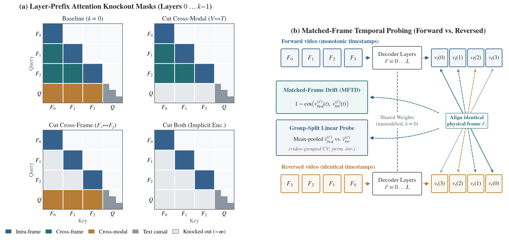
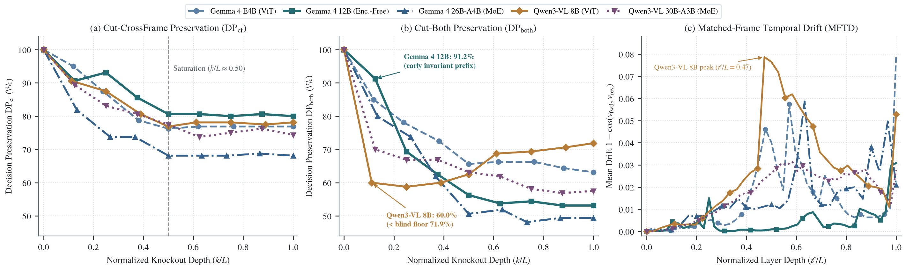

Video MLLMs Are Implicitly Early In-Fusion: Architectural Lessons for Native Video Training 视频多模态大模型隐式呈现早期融合：原生视频训练的架构启示
Training-free prefix attention knockouts across five Gemma 4 and Qwen3-VL models reveal that inter-frame temporal binding completes in the lower half of the decoder.
通过对 Gemma 4 与 Qwen3-VL 系列共五个开源模型的免训练前缀注意力阻断与正反向帧漂移分析，发现跨帧时序绑定主要发生在解码器前半深度。

Abstract摘要
Most video multimodal large language models (MLLMs) process vision with a standalone encoder, or duplicate modality-specific parameters in every layer. On static images, recent work shows that placing dedicated visual capacity in early decoder layers (early in-fusion) is sufficient. Video further requires binding information across frames, leaving open whether early in-fusion extends to video.
We analyze five open-weights models from the Gemma 4 and Qwen3-VL families—spanning encoder-free, ViT-equipped, dense, and sparse MoE designs—using training-free prefix attention knockouts and forward-versus-reversed frame drift on Video-Index. Cross-frame attention matters only in the lower half of every model (blocking it beyond half depth changes decision preservation by at most 3.1 points). In encoder-free Gemma 4 12B, the first eighth of layers encodes each frame independently of other frames and of the prompt, retaining 91.2% of baseline decisions under joint isolation, whereas Qwen3-VL drops 16–23 points more under joint isolation than single-axis knockouts. In hybrid sliding-window decoders, temporal drift peaks sharply at global attention layers.
主流视频多模态大模型往往依赖独立视觉编码器或在所有层复制模态参数。我们在 Gemma 4 与 Qwen3-VL 两个家族共五个开源模型（覆盖无编码器、ViT 编码器、稠密与稀疏 MoE）上开展机制分析，发现所有模型的跨帧注意力仅在前半层深起决定作用（过半深度后阻断决策保留率变化不超过 3.1 个百分点）；在无编码器 Gemma 4 12B 中，前 1/8 层可实现帧间与图文联合隔离并保留 91.2% 原始决策；而在混合滑窗解码器中，跨帧时序漂移集中爆发于全局注意力层。
Key Findings核心发现
-
Cross-frame attention saturates by half depth across all five architectures跨帧注意力在全部五种架构的前半层深即趋于饱和 Decision preservation under cross-frame knockout decreases monotonically in layers 0–0.5L and changes by at most 3.1 points from 0.5L to L. On Gemma 4 26B-A4B, Temporal accuracy drops from 20.0% to 5.0% before the midpoint. 阻断跨帧注意力后，决策保留率在 0–0.5L 区间单调下降，而在 0.5L–L 区间波动不超过 3.1 个百分点；Gemma 4 26B-A4B 的时序题准确率在中点之前即从 20.0% 降至 5.0%。
-
Joint early-layer isolation separates encoder-free vs. ViT-equipped models浅层联合隔离揭示无编码器与 ViT 模型的显著差异 Encoder-free Gemma 4 12B retains 91.2% of decisions and 95.8% of accuracy under joint isolation of its first 6/48 layers, enabling prompt-independent frame caching; ViT-equipped Qwen3-VL 8B exhibits a super-additive drop to 60.0% at k/L=0.11. 无编码器 Gemma 4 12B 在前 6/48 层联合隔离下保留 91.2% 决策与 95.8% 准确率，支持与提示词无关的帧级状态缓存；而带 ViT 的 Qwen3-VL 8B 在浅层联合隔离时出现超加性骤降。
-
Attention topology dictates where temporal drift emerges注意力拓扑决定了跨帧时序漂移的发生位置 Full-attention Qwen3-VL shows a single smooth MFTD peak near mid-depth (ℓ/L=0.47–0.58), whereas hybrid sliding-window Gemma 4 exhibits sharp spikes strictly at global attention layers. 全注意力 Qwen3-VL 的时序漂移在中层形成单峰（ℓ/L=0.47–0.58），而 5 局部 + 1 全局交错的 Gemma 4 则在全局注意力层出现阶跃式尖峰。
Cross-Model Mechanistic Results跨模型机制分析主结果

| Model | Front-End | L | Base (%) | DP_cf (k1/k0.5/L) | DP_both (k1/L) | Δ_rev (%) | Peak MFTD (ℓ/L) |
|---|---|---|---|---|---|---|---|
| Gemma 4 E4B-it | ~150M ViT + PLE | 42 | 7.50 | 95.0 / 76.2 / 76.9 | 85.0 / 63.1 | −3.33 | 0.0574 (0.57) |
| Gemma 4 12B-it | Encoder-Free | 48 | 15.00 | 90.6 / 80.6 / 80.0 | 91.2 / 53.1 | +4.17 | 0.0297 (0.98) |
| Gemma 4 26B-A4B-it | MoE (4B active) | 30 | 20.00 | 81.9 / 68.1 / 68.1 | 80.0 / 49.4 | +5.83 | 0.0587 (0.63) |
| Qwen3-VL 8B | ViT + 3D-MRoPE | 36 | 10.00 | 90.6 / 76.9 / 78.1 | 60.0 / 71.9 | +4.17 | 0.0787 (0.47) |
| Qwen3-VL 30B-A3B | MoE (3B) + ViT | 48 | 10.62 | 89.4 / 77.5 / 74.4 | 70.0 / 57.5 | +2.50 | 0.0315 (0.58) |